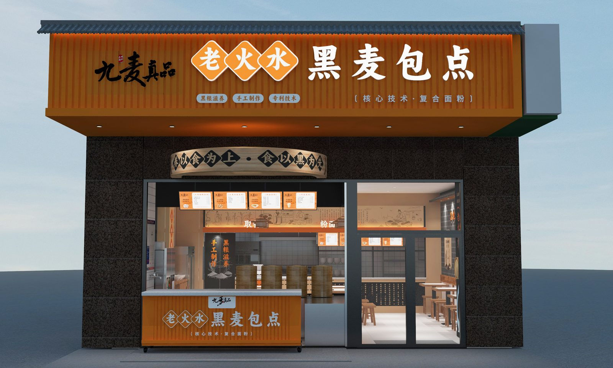
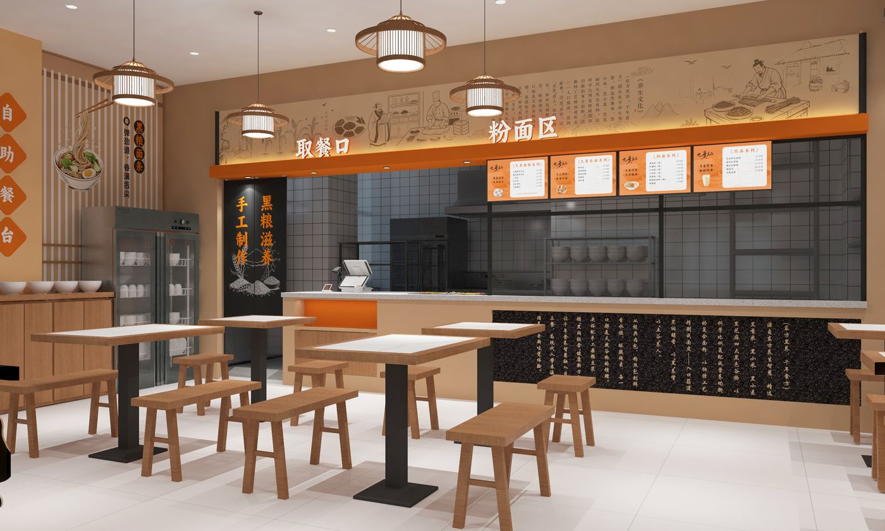
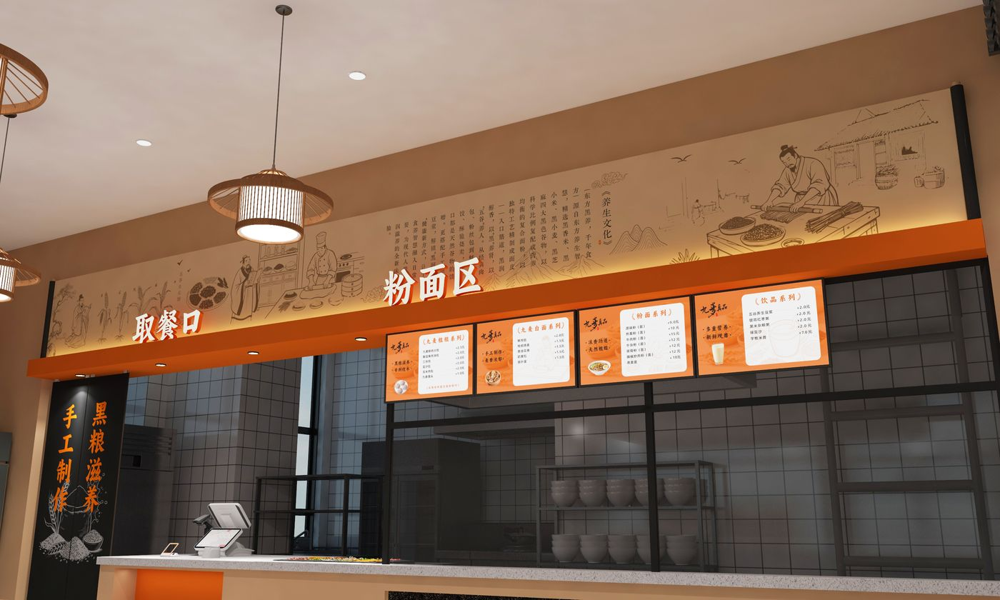
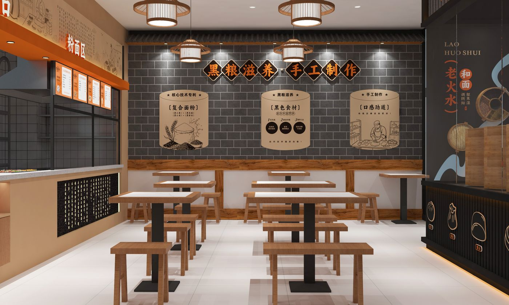
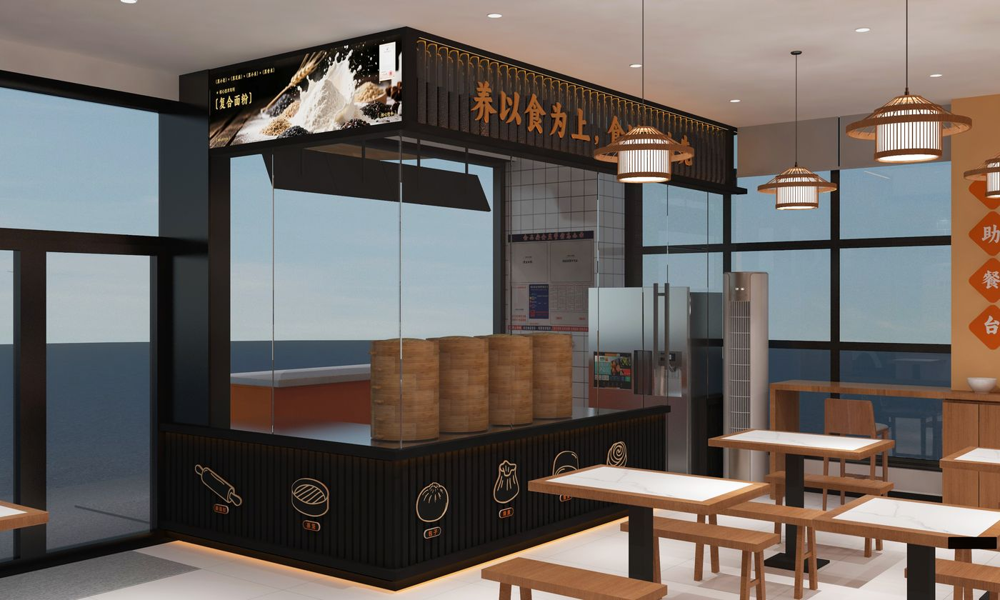
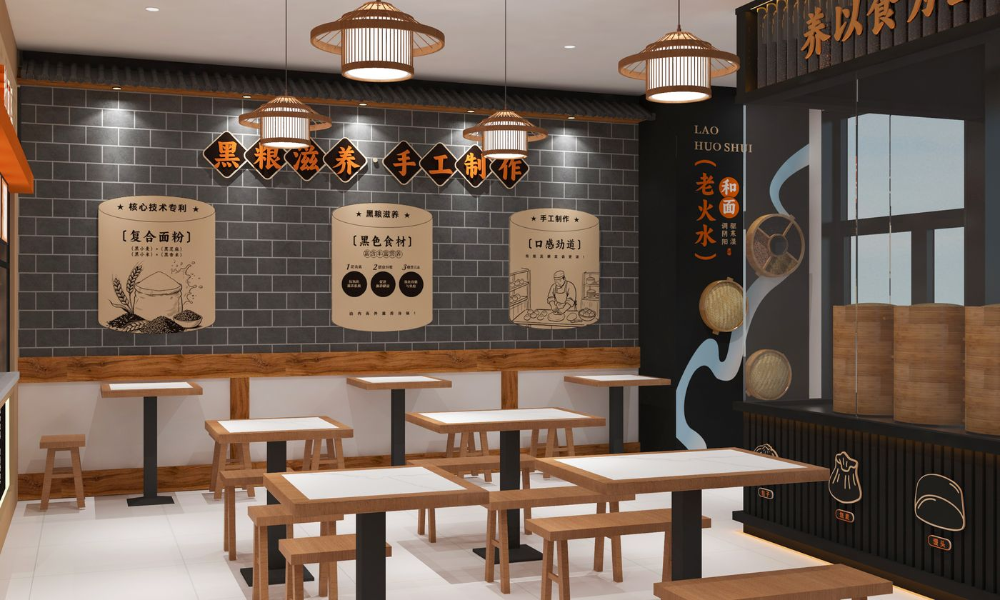

案例研究 / CASE STUDY · 07
JIUMAI
九麦真品品牌早点店
BRAND BREAKFAST STORE
BRAND BREAKFAST STORE

项目角色 / PROJECT ROLE
以黑麦为特色的品牌早点店，<br>围绕「真材实料、健康早餐」的品牌定位，用温暖质朴的材质与简洁的空间语言传递品质感。
A black-rye breakfast brand store — warm, honest materials in a simple spatial language.
项目角色 / ROLE
空间设计师
SPATIAL DESIGN
工作范围 / SCOPE
门店空间设计 · 效果图 · 施工配合
Store design · Visualization · Construction coordination
02 / 空间呈现
空间呈现 / SPATIAL PRESENTATION
暖木色与深色柜体构建温暖质朴的就餐氛围，操作吧台与就餐区形成清晰的动线。

03 / 空间节点
空间节点 / SPATIAL MOMENTS
门头、菜单墙与座位区共同构成完整的品牌识别。<br>门头与细节 · FACADE & DETAILS


04 / 细节与场景
细节与场景 / DETAILS & SCENES
从灯饰到墙面价目表，每个细节都服务于真实、健康的品牌表达。

05 / 落地呈现
落地呈现 / BUILT STORE
项目已建成并营业，实际使用效果符合设计预期。

项目总结 / PROJECT SUMMARY
设计要让品牌的第一眼，就尝到诚意。
Design lets a brand show its sincerity at first sight.